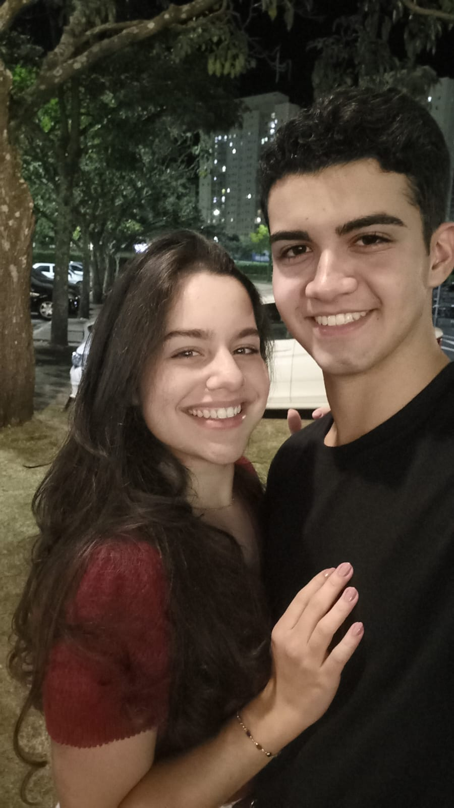
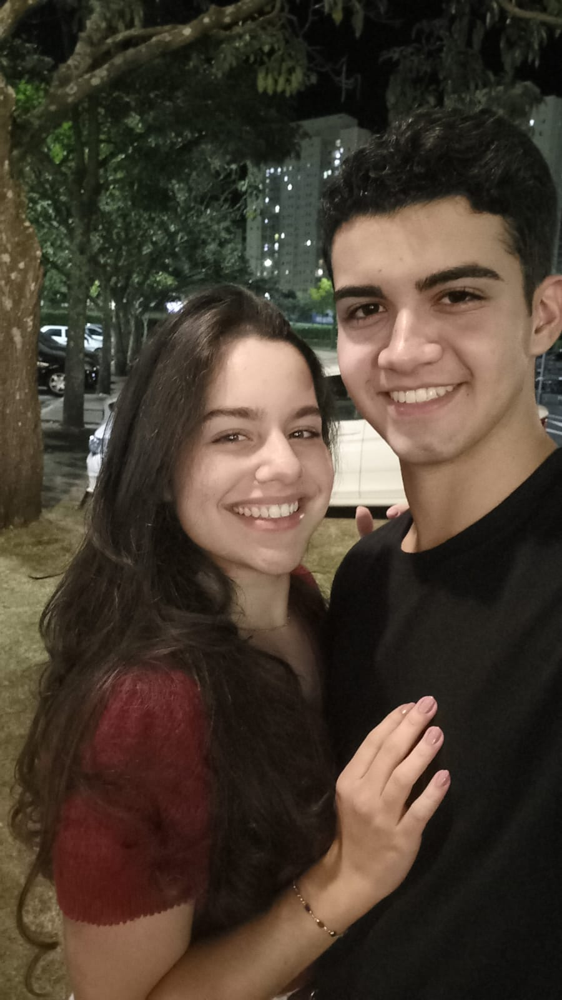
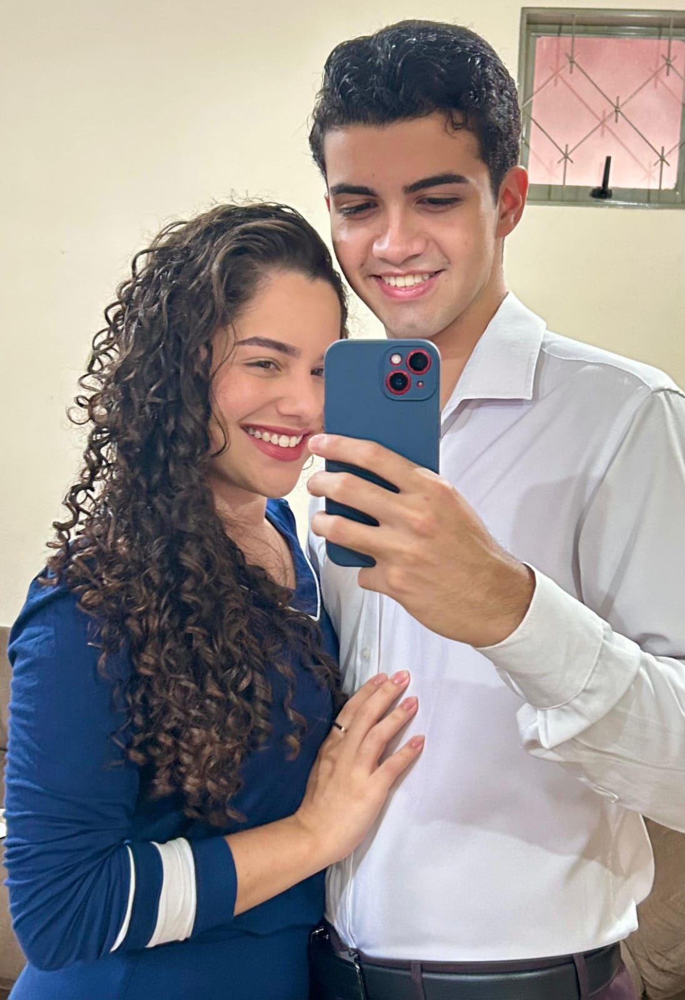
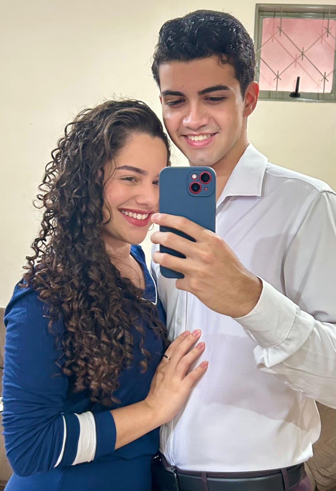
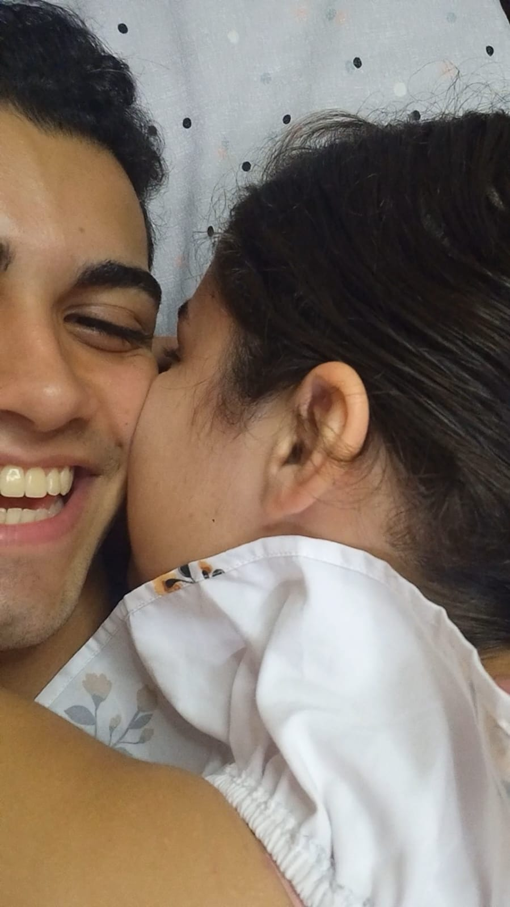
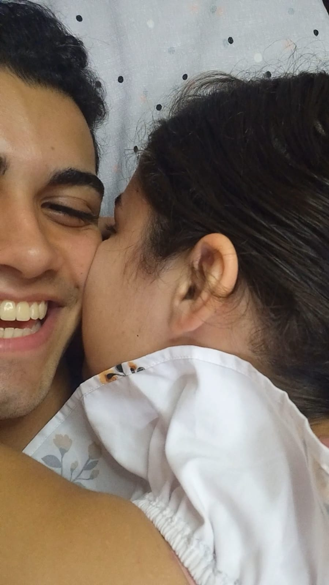

 


 

Estamos juntos há:
Como é bom ver que o 2º dia dos namorados chegou, e eu continuo aqui... bobo por você...
Quero que saiba que você foi o divisor de águas na minha vida, foi a minha relação com você que me tornou, e está me tornando um homem cada vez melhor. Cada dia que passa eu vejo tudo o que passamos e almejo ansiosamente os momentos futuros. Nesse tempo pude conhecer mais de você, e vejo mais claramente a sua luta diária por construir um futuro brilhante. Sei que sabe que está mais próximo que imagina, e eu fico muito feliz, orgulhoso, admirado... faltam palavras pra esboçar o quanto eu te admiro.
Entre outras palavras: Eu te amo! Amo ter te conhecido, amo estar construindo uma história com você, amo sua alegria, amo sua animação, amo sua força, amo sua companhia, amo cada cm³ da sua pessoa por dentro e por fora...
Você é um presente pra mim! Agradeço a Deus por ter você, e espero que daqui pra frente, o tempo nos reserve o aumento da nossa intimidade, amizade e amor.
Eu te amo! ❤️